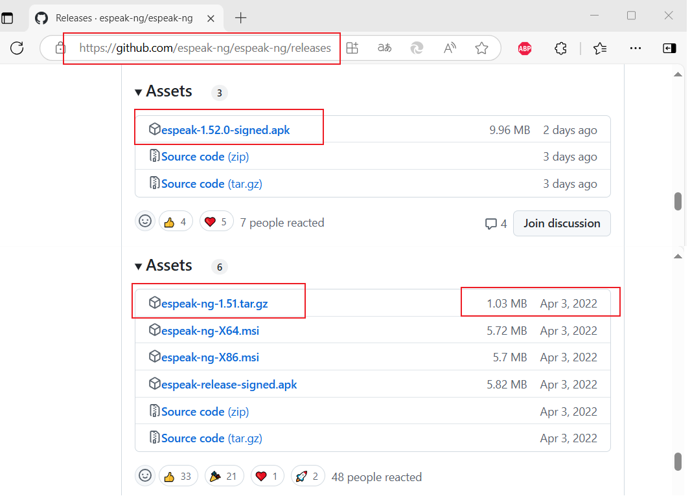
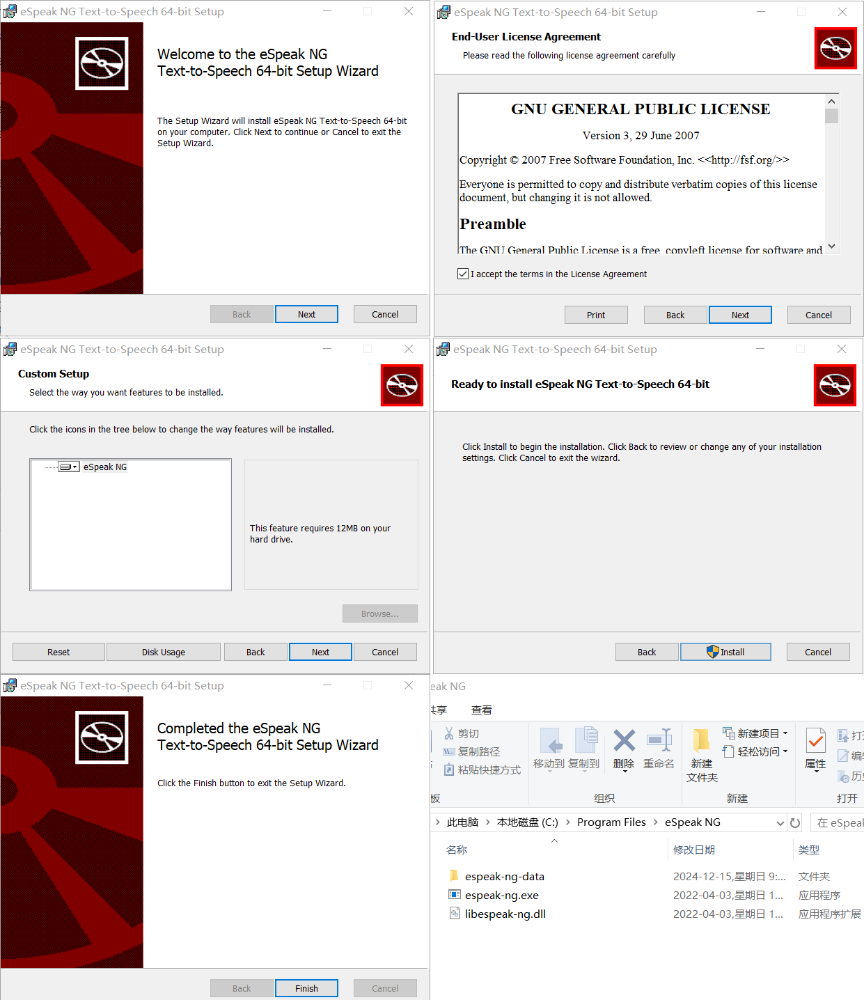
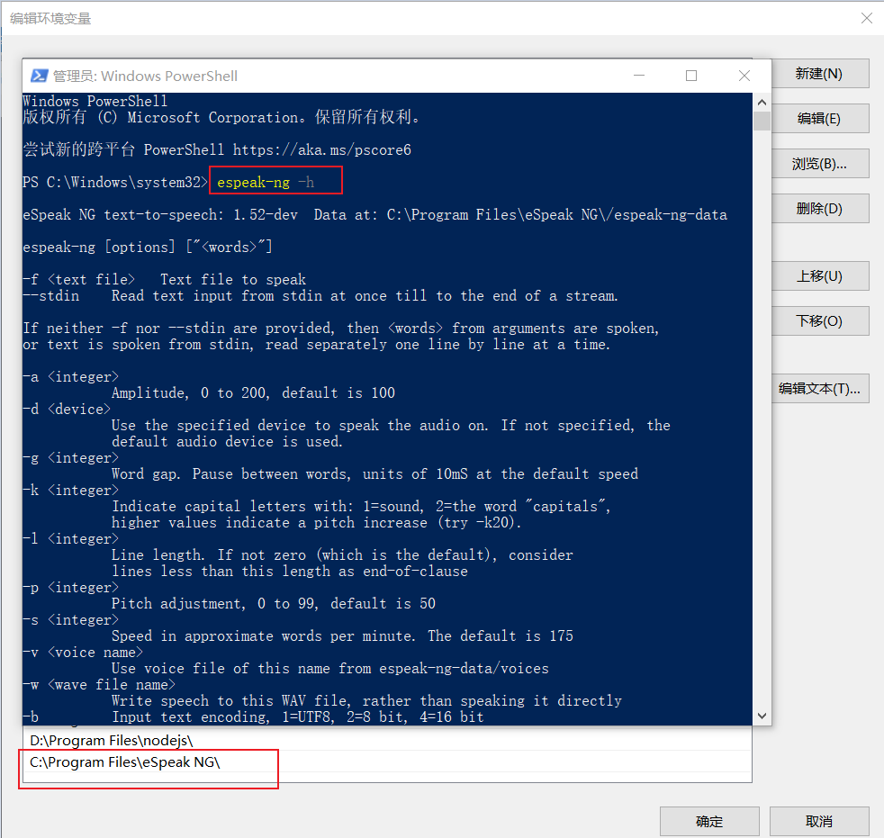
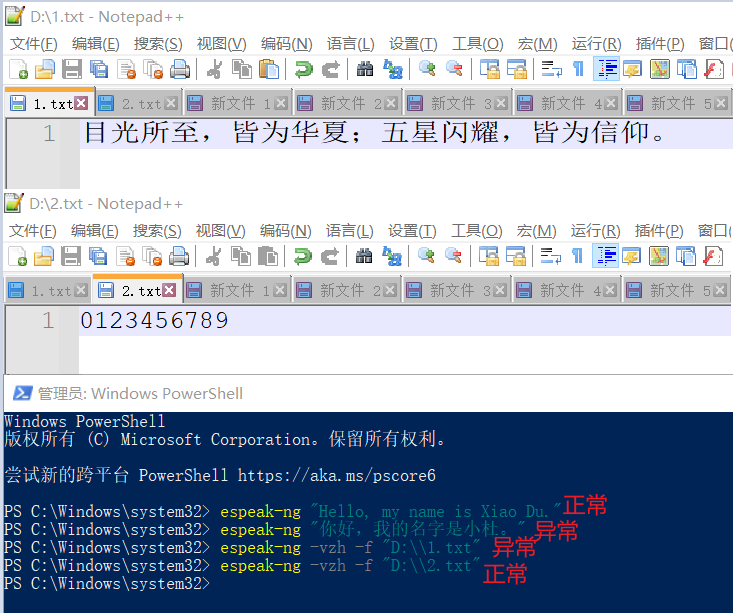

eSpeak NG
GitHub：espeak-ng/espeak-ng: eSpeak NG is an open source speech synthesizer that supports more than hundred languages and accents.
不得不说，这家伙支持的语言是真多啊！请看：espeak-ng/docs/languages.md at master · espeak-ng/espeak-ng
- eSpeak NG is available as:（摘自 GitHub）
-
- A command line program (Linux and Windows) to speak text from a file or from stdin.
- A shared library version for use by other programs. (On Windows this is a DLL).
- A SAPI5 version for Windows, so it can be used with screen-readers and other programs that support the Windows SAPI5 interface.
- eSpeak NG has been ported to other platforms, including Solaris and Mac OSX.
1.522024-12-12 发布的，但是只有 apk ， 是啥意思？我的 exe 呢！
1.51这个版本倒是有 exe，但是是 2022-04-03 发布的，好家伙……

windows
安装
这里下载的是1.51版本，因为他有 exe 啊！
安装截图

还是比较贴心的，自动添加到环境变量了。请看：

测试
espeak-ng "Hello, my name is Xiao Du."
espeak-ng "你好，我的名字是小杜。"
espeak-ng -vzh -f "D:\\1.txt"
espeak-ng -vzh -f "D:\\2.txt"

还没有弄清楚应该怎么玩……我亲爱的汉语，弄得一团糟！！！